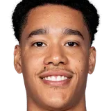

Played 2 seasons for 1 team; his teams went 38–38 in his games.
Jump to: Record by opponent · Season by season · Teammate help
Compare Cam Christie with…
Final NBA finish, season by season
Title Finals Other playoffs Missed playoffs. #1 = champion; the dashed line is last place that season. Each point opens that season's final standings.
All 30 teams ranked in 2024-25, his best finish (#10)Teammate help
 Kawhi Leonard4.01 season
Kawhi Leonard4.01 season James Harden3.01 season
James Harden3.01 season Ivica Zubac0.51 season
Ivica Zubac0.51 season
Career
Career records (W–L, W − L, with and without) include 2026-27 games through Nov. 22, 2026; season counts and finishes are through 2025-26. Each card opens its board in the same scope. How we count.

Latest completed seasons
- 2025-26·
 LA Clippers·#19 of 3042–40 · Missed playoffs
LA Clippers·#19 of 3042–40 · Missed playoffs - 2024-25·LA Clippers·#10 of 3050–32 · Lost in the first round 3–4 to
 Denver
Denver
2026-27 so far
Games through Nov. 22, 2026, the last game in the nightly data. These games are already in his career records above (W–L, win %, W − L, with and without, all marked "incl. 2026-27"). Season counts, final finishes and teammate help use completed seasons through 2025-26; 2026-27 joins them when the season ends.
| Team | His games | With him | Without him | Gap | On/off per 100 | Started / bench | Close games |
|---|---|---|---|---|---|---|---|
| 8 | 2–6 25.0% | 2–5 28.6% | −3.6 | +6.5 | N/A / 2–6 | N/A |
Season by season
Newest first; every header sorts. Final NBA finish is the team's rank among all teams that season (#1 = champion) and opens that season's standings. "Without him" uses the team-season window; the span line counts only the games between his first and last game for the team. The 2026-27 (to date) row counts games through Nov. 22, 2026; its final finish and playoffs are in progress.
| 2026-27 (to date) | In progress | 4–11 26.7% | In progress | 8 of 15 | 2–6 25.0% | 2–5 28.6%span: 2–5, gap −3.6 | −3.6 | |
| 2025-26 | #19 of 30 | 42–40 51.2% | Missed playoffs | 55 of 82 | 26–29 47.3% | 16–11 59.3%span: 15–11, gap −10.4 | −12.0 | |
| 2024-25 | #10 of 30 | 50–32 61.0% | Lost 1st round 3–4 | 13 of 82 | 10–3 76.9% | 40–29 58.0%span: 24–20, gap +22.4 | +19.0 |
On/off, starts and close games
From the lineup data, 1996-97 on, incl. 2026-27 through Nov. 22, 2026. On/off is net points per 100 possessions with him on the floor minus off, a different unit from the win-rate gaps. Started and off the bench are team records in those games; close games are those within 5 points in the last 5 minutes with him on the floor.
| 2026-27 (to date) | +6.5 | 2–6 25.0% | N/A | |
| 2025-26 | −1.4 | 26–29 47.3% | N/A | |
| 2024-25 | −22.0 | 10–3 76.9% | 1–0 100.0% |
Teammate help by season
Two separate numbers per season, each with every teammate that adds to it. Help this season = Teammates Score points for honors won that season by teammates who shared a game with him. Help coming in = the same teammates' honors from the season before. How help works.
- 2026-27LA ClippersHelp this season: pending (honors are awarded after the season)
Help coming in (2025-26 honors of teammates he has played with so far): 0
- 2025-26LA Clippers
Kawhi Leonard All-NBA 2ndAll-Star441 g
Help this season: 4 = 4 Kawhi Leonard
More: help coming in and other teammates
Help coming in (teammates' honors the season before): 4.5 = 3 James Harden + 1 Darius Garland + 0.5 Ivica Zubac
Other teammates (no honors that season): Kris Dunn 55 g, Brook Lopez 50 g, Kobe Sanders 50 g, Nicolas Batum 49 g, John Collins 47 g, Jordan Miller 40 g, Yanic Konan Niederhauser 36 g, Derrick Jones 32 g, James Harden 31 g, Kobe Brown 30 g, Ivica Zubac 29 g, Bogdan Bogdanovic 15 g, TyTy Washington 15 g, Bennedict Mathurin 15 g and 9 more
- 2024-25LA Clippers
James Harden All-NBA 3rdAll-Star312 gIvica Zubac All-Def 2nd0.511 g
Help this season: 3.5 = 3 James Harden + 0.5 Ivica Zubac
More: help coming in and other teammates
Help coming in (teammates' honors the season before): 4 = 4 Kawhi Leonard
Other teammates (no honors that season): Derrick Jones 13 g, Nicolas Batum 12 g, Kobe Brown 11 g, Kris Dunn 10 g, Kawhi Leonard 9 g, Norman Powell 9 g, Bogdan Bogdanovic 8 g, Amir Coffey 8 g, Drew Eubanks 7 g, Trentyn Flowers 6 g, Jordan Miller 6 g, Patrick Mills 5 g, Mo Bamba 5 g, Ben Simmons 5 g and 6 more
Record against each opponent
Regular season, incl. 2026-27 through Nov. 22, 2026: 76 games, 38–38, against 28 franchises.
Grouped by franchise (named as today); game lists keep each team's name that season. Filters and the tab are kept in the URL, so a filtered view can be shared.
| Games list | |||||||
|---|---|---|---|---|---|---|---|
| 5 | 2–3 | 40.0% | −1 | N/A | 2024-25 to 2026-27 | ||
| 5 | 3–2 | 60.0% | +1 | N/A | 2024-25 to 2026-27 | ||
| 4 | 3–1 | 75.0% | +2 | N/A | 2024-25 to 2026-27 | ||
| 4 | 2–2 | 50.0% | 0 | N/A | 2024-25 to 2025-26 | ||
| 4 | 2–2 | 50.0% | 0 | N/A | 2025-26 | ||
| 4 | 4–0 | 100.0% | +4 | N/A | 2025-26 to 2026-27 | ||
| 4 | 1–3 | 25.0% | −2 | N/A | 2024-25 to 2026-27 | ||
| 4 | 2–2 | 50.0% | 0 | N/A | 2025-26 to 2026-27 | ||
| 3 | 2–1 | 66.7% | +1 | N/A | 2024-25 to 2025-26 | ||
| 3 | 3–0 | 100.0% | +3 | N/A | 2024-25 to 2025-26 | ||
| 3 | 1–2 | 33.3% | −1 | N/A | 2025-26 to 2026-27 | ||
| 3 | 2–1 | 66.7% | +1 | N/A | 2024-25 to 2025-26 | ||
| 3 | 1–2 | 33.3% | −1 | N/A | 2024-25 to 2026-27 | ||
| 3 | 1–2 | 33.3% | −1 | N/A | 2025-26 | ||
| 3 | 3–0 | 100.0% | +3 | N/A | 2024-25 to 2025-26 | ||
| 2 | 0–2 | 0.0% | −2 | N/A | 2024-25 to 2025-26 | ||
| 2 | 2–0 | 100.0% | +2 | N/A | 2025-26 | ||
| 2 | 0–2 | 0.0% | −2 | N/A | 2024-25 to 2025-26 | ||
| 2 | 0–2 | 0.0% | −2 | N/A | 2025-26 | ||
| 2 | 0–2 | 0.0% | −2 | 0–1 (1–2 in games) | 2025-26 | ||
| 2 | 0–2 | 0.0% | −2 | N/A | 2025-26 | ||
| 2 | 0–2 | 0.0% | −2 | N/A | 2025-26 | ||
| 2 | 2–0 | 100.0% | +2 | N/A | 2025-26 | ||
| 1 | 1–0 | 100.0% | +1 | N/A | 2025-26 | ||
| 1 | 0–1 | 0.0% | −1 | N/A | 2025-26 | ||
| 1 | 1–0 | 100.0% | +1 | N/A | 2025-26 | ||
| 1 | 0–1 | 0.0% | −1 | N/A | 2025-26 | ||
| 1 | 0–1 | 0.0% | −1 | N/A | 2025-26 |
Rows add up to his career record in his games. A playoff series counts when he played in it; early round-robin games show as games only. How we count.
Playoffs, with and without him
| 2024-25 | Lost in the first round 3–4 to | #10 of 30 | 3 of 7 | 1–2 33.3% | 2–2 50.0% | −16.7 |
Arrival and departure
Team wins per 82 games the season before he arrived vs his first season there, and his last season vs the season after he left. He leaves a team only when his next season with games is for another team (or he never plays again); whole seasons he missed and came back from are one "Missed" row with the team's record without him. Per 82 so short seasons compare fairly. These are team records, not a measure of what he did.
| Debut | 2024-25 | 2023-24: 51–31 51.0 per 82 | 2024-25: 50–32 50.0 per 82 | −1.0 wins |
Best duos
Team record in regular-season games both played, top 10 by win %, at least 50 games together, incl. 2026-27 through Nov. 22, 2026.
- Kawhi Leonard
32–18 64.0%
 Nicolas Batum
34–27 55.7%
Nicolas Batum
34–27 55.7% Kris Dunn
36–37 49.3%
Kris Dunn
36–37 49.3% Derrick Jones
26–27 49.1%
Derrick Jones
26–27 49.1%- Kobe Sanders 28–30 48.3%
 Brook Lopez
27–31 46.6%
Brook Lopez
27–31 46.6%
With and without his teammates
His 12 teammates with the most regular-season games together. "Together" is the team's record in the games both played for it; "Without him" is the team's record in the games Cam Christie played for that team while the teammate was on it (between the teammate's first and last game for the team, the appearance span) and the teammate did not play. Fewer than 20 games without him: no gap. Games through Nov. 22, 2026. How we count.
- Kris DunnLA Clippers 2024-25 to 2026-27
- Together
- 36–37 49.3%
- Without him
- 2–1 66.7%
- Gap
- Too few games without him
- Nicolas BatumLA Clippers 2024-25 to 2025-26
- Together
- 34–27 55.7%
- Without him
- 2–5 28.6%
- Gap
- Too few games without him
- Kobe SandersLA Clippers 2025-26 to 2026-27
- Together
- 28–30 48.3%
- Without him
- 0–5 0.0%
- Gap
- Too few games without him
- Brook LopezLA Clippers 2025-26 to 2026-27
- Together
- 27–31 46.6%
- Without him
- 1–4 20.0%
- Gap
- Too few games without him
- Derrick JonesLA Clippers 2024-25 to 2026-27
- Together
- 26–27 49.1%
- Without him
- 12–11 52.2%
- Gap
- 3.1 points higher
- Kawhi LeonardLA Clippers 2024-25 to 2025-26
- Together
- 32–18 64.0%
- Without him
- 4–13 23.5%
- Gap
- Too few games without him
 John CollinsLA Clippers 2025-26
John CollinsLA Clippers 2025-26- Together
- 19–28 40.4%
- Without him
- 7–1 87.5%
- Gap
- Too few games without him
 Jordan MillerLA Clippers 2024-25 to 2025-26
Jordan MillerLA Clippers 2024-25 to 2025-26- Together
- 25–21 54.3%
- Without him
- 10–5 66.7%
- Gap
- Too few games without him
- James HardenLA Clippers 2024-25 to 2025-26
- Together
- 24–19 55.8%
- Without him
- 0–2 0.0%
- Gap
- Too few games without him
 Kobe BrownLA Clippers 2024-25 to 2025-26
Kobe BrownLA Clippers 2024-25 to 2025-26- Together
- 21–20 51.2%
- Without him
- 4–3 57.1%
- Gap
- Too few games without him
- Ivica ZubacLA Clippers 2024-25 to 2025-26
- Together
- 20–20 50.0%
- Without him
- 5–2 71.4%
- Gap
- Too few games without him

Yanic Konan NiederhauserLA Clippers 2025-26 to 2026-27- Together
- 19–19 50.0%
- Without him
- 1–5 16.7%
- Gap
- Too few games without him